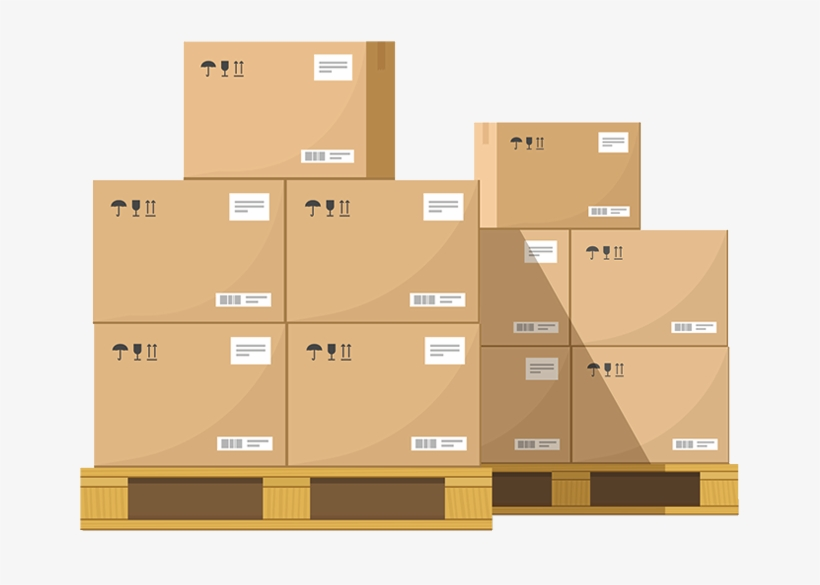

Total: {{totalWeight}} Kg

{{ palet.weight.toFixed(2) }} Kg
Nº{{i}}
{{ palet.description }}
| ID | {{element.id}} | Code | {{element.code}} | Start Location | {{getLocation(element.startLocation)}} | End Location | {{getLocation(element.endLocation)}} | Departure Time | {{element.departureTime | date}} | Arrival Time | {{element.arrivalTime | date}} | Assigned Vehicle ID | {{element.assignedVehicleId}} | Carrier ID | {{element.carrierId}} | Status | {{getStatus(element.status)}} {{getStatus(element.status)}} {{getStatus(element.status)}} | Action |
|---|
{{ palet.description }}